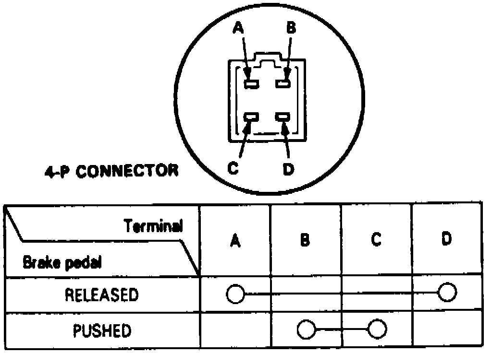

Brake Switch (Cruise Control): Testing and Inspection
1. Disconnect 4 pin connector from brake light switch.Fig. 31 Brake Switch Continuity Chart:

2. Check for continuity between terminals of 4 pin connector as shown, Fig. 31.
3. If results are not as indicated, replace switch or adjust pedal height.